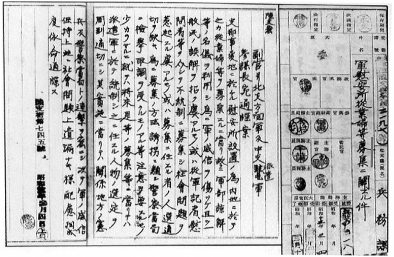

‘위안부’란 도대체 어떤 이들일까. 아직 어린 10대에, 자신의 의지와는 상관없이 ‘일본군에게 강제로 끌려’가 노예처럼 성을 유린당한 조선의 소녀들. 우리가 아는 위안부란 그런 존재다.
그런데 ‘위안부’의 존재를 일찍이 세상에 알린 사람은 실은 한국인이 아니라 일본인이었다. 그는 센다 가코千田夏光라는 저널리스트로, 1973년에『목소리 없는 여성 8만 명의 고발, 종군위안부声なき女８万人の告発・従軍慰安婦』라는 책을 냈다. 책 제목만으로도 이 책이 ‘종군위안부’ 편에 서서 쓰인 책이라는 것을 알수 있는데, 후기에서 센다는 이 책을 쓰게 된 동기를 이렇게 말한다.
내가 위안부에 대해 흥미를 갖게 된 것은 쇼와昭和 39년(1964)에 마이니치毎日신문사가 사진집 『일본의 전력日本の戦歴』을 발행했을 때였다. 이 사진집은 『마이니치 클럽毎日クラブ』 별책으로 편집된 책인데, 15년전쟁(만주사변부터 패전까지의 전쟁을 가리킨다－인용자) 기간에 마이니치 신문 특파원이 찍어온 이만수천 장의 사진을 선별하고 편집하는 일을 내가 담당했다.
그런데 그 작업을 하던 중 이상한 여성의 사진을 수십 장 발견했다. 군대와 함께 행군하는 조선인인 듯한 여성. 머리에 트렁크를 이고 있는 모습은 조선 여성 이 곧잘 취하는 자세다. 점령 직후로 추정되는 풍경 속에서 일본옷 차림으로 차에 올라타는 여성. 중국인들의 경멸의 시선을 받고 있는 일본식 머리를 한 여성. 사진 필름에 붙은 설명에 ‘위안부’라는 글자는 없었다. 그러나 이 여성의 정체를 쫓는 동안 나는 처음으로 ‘위안부’라는 존재를 알게 되었다.(215쪽)
이후 센다는 “온갖 기회를 통해 이 위안부의 실체를 알아내려 했지만, 전쟁체험자들은 웬일인지 그 구체적 사실에 관해서는 얼버무렸”고, “이야기 해준 사람들은 익명으로 해줄 것을 완강하게 고집”했다고 말한다. 그러다가 군의로 종군한 적이 있는 의사를 만나 그가 위안부의 “검진을 명령받았고 그 소견을 보고서로 썼다는 사실을 알았”(215쪽)고, 또 “이 리포트를 통해 군간부가” “조선인여성들에게 착목하게 된 과정도 알게 되었다”(216쪽)는 것이다(하지만, 이 군의관이 위안부 제도를 생각해낸 것처럼 되어 있는 부분에 대해서는 사실과 다르다고 군의관의 딸이 센다에게 항의했다고 한다. 아마코 구니, 2001). 아무튼, “군이 착목한 조선인 위안부의 비극은 새삼 되풀이할 필요도 없지만”이라고 쓰고 있는 데에서도, 센다가 어떤 입장에서 이 글을 썼는지는 명백하다. 센다는 첫머리에서도 이렇게 쓰고 있다.
『고지엔広辞苑』에서 위안부 항목을 찾으면 ‘전쟁터 부대와 동행하며 장병들을 위안했던 여자’라고 되어 있다. ‘위안했다’고 과거형으로 말해지고 있는 데에 그녀들의 슬픔이 있다. 그로부터 28년, 그녀들에 대해 말해주는 사람은 없다. 하지만 혹시 말할 수 있는 위안부가 있다면 분명히 말할 것이다. 우리의 슬픔은 영원히 화석이 되는 일은 없을 겁니다, 라고.(6쪽)
센다가 말한 위안부의 숫자는 후에 다시 보겠지만 문제가 없지 않다. 하지만 이 책이 ‘위안부’의 비극에 착목하고 사회적인 관심을 환기시키려 했던 첫번째 책이라는 것만은 분명하다.
○○○ ○○○○, ○○○ ○○○○○, ○○○ ○○ ○○○ ○○○ ○○○○○○○ ○○ ○○○ ○○○○ ○○○○ ○○. 국가를 위한 군인들의 희생에 대한 보상은 있는데 왜 위안부에게는 없느냐는 것이이책의 관심사 이자 주장이기도 하다. 그리고 결론부터 말하자면 그런 센다의 시각은 이후에 나온 그 ○○ ○○○○ ○○○○ ○○○ ○○○ ○○○ ○이었다.
사실 위안부들의 증언집을 단 한 권만 펼쳐보아도, ‘위안부’라는 존재가 우리에게 알려진 하나의 이미지만으로는 결코 충분치 않은 다양한 측면을 지니고 있었다는 것을 금방 알 수 있다. 그런 의미에서는, 그동안 지원자들과 부정자들이 위안부에 대해 가져온 상반되는 이미지는 자신들이 보고 싶은 이미지를 벗어나는 증언은 보지 못했거나 무시한 결과물이다.
그건 꼭 의도적이라기보다는 이른바 ‘위안부 문제’가 발생한 이후에 나온 관련 연구와 발언들이 이 문제를 식민지배와 일본의 전후처리 문제로서 다루었기 때문이기도 하다. 말하자면 ‘일본’(군)을 옹호하거나 비판하는 일, 그에 따른 ‘사죄와 보상’의 필요성을 주장하거나 반대하는 일이 단순히 과거의 일이 아니라 그들 자신이 서 있는 현실정치에 대해 논하는 일이 되면서 그런 ‘현실적 목적’으로부터 자유롭지 않았던 것이다. 센다의 책이 ‘조선인 위안부’의 비극에 대한 사죄의식을 가지면서도 거칠게나마 위안부의 전체 모습을 그려낼 수 있었던 것은 그런 현실정치에서 자유로웠기 때문일 것이다.
센다의 책에는 1970년대 초, 그러니까 40년 전에 한국에까지 와서 찾아낸 ‘위안부’들을 인터뷰한 내용도 들어 있다. 말하자면 이 책에는 현재 우리 앞에 있는 ‘위안부’ 할머니들보다 마흔 살이나 적은, 아직 젊은 ‘위안부’들이 등장해서 생생한 목소리로 자신의 체험을 들려주고 있다. 그리고 이 책에는 일본인 위안부뿐 아니라 위안소를 이용한 군인들, 그리고 위안부를 모집했던 ‘업자’들까지 등장한다. 그렇게 이 책은 위안부의 증언에 등장하는 관계자들 대부분이 등장하는 유일한 책이기도 하다.
‘일본군 위안부’ 중에는, 당연한 일이지만, 일본인도 적지 않았다. 그런데도 ‘위안부 문제’가 발생한 이후에는 일본인 위안부는 끝내 단 한 사람도 나타나지 않았다. 물론 소개업자나 포주도 목소리를 내지 않았다. 위안부 문제가 단순히 일본군과 조선인 위안부의 구도로만 이해된 데에는 그런 상황도 작용했을 것이다.
그렇지만 위안부들의 증언에는 자신들을 데리고 간 소개업자와 포주들, 관리인들의 이야기가 자주 등장한다(『강제로 끌려간 조선인 군위안부』 1~5 외, 이하 『강제 1』처럼 표기함). 그런데도 그 부분을 강조한 이는 위안부 문제를 부인하는 이들 외엔 거의 없었다. 최근에 와서야 일본의 한 연구자는 이렇게 말한다.
일본군 ‘위안부’ 피해자인 조선인 여성들의 증언과 그 배후의 라이프스토리를 다시 한번 돌이켜보면, 그녀들 중에도 일자리를 주선해준다고 생각했던 사람에 게 ‘일하면서 공부할 수 있다’, ‘결혼하지 않고도 자립할 수 있다’, ‘예쁜 옷을 입고 돈을 벌 수 있다’는 등 속아서 끌려가 ‘위안부’가 된 여성들이 많다는 사실을 새삼 알게 된다. 그리고 대부분의 경우, 그녀들은 유교적 가족의 보호와 속박의 틀 안에 있지 못했던 가난한 소녀들이거나 혹은 가난하지만 자신의 뜻이 아닌 결혼을 거부하고 가족으로부터 도망친 소녀들이었다는 사실을 알 수 있다.
예를 들면, 잘 알려져 있는 것처럼, 송신도 씨는 부모가 정해준 상대와 열여섯 살 때 결혼했는데, 시집을 뛰쳐나와 아는 이의 집 등을 전전하면서 아이 보는 일 같은 것을 하고 있을 때, 40대쯤의 조선인 여성이 ‘전쟁터에서 나라를 위해 일하’는 걸로 ‘결혼하지 않고도 자립할 수 있다’는 말로 유혹해 신의주의 ‘소개소’ 로 데려갔고, 그 후에 봉천(奉天: 선양瀋陽의 만주국 시절 이름)이나 한커우漢口, 우한武漢 등지에 가게 되면서 ‘위안부’를 강요당했다. 모르긴 해도 1920~30년대에 걸쳐 사회적 이동성이 높아진 것을 배경으로 조금 더 나은 생활을 지향한 그녀들의 이른바 현실탈출 소망을 역이용한 인물이 감언으로 꾀었고 그녀들이 가족의 보호 기능에서 단절되어 있음을 이용해 ‘위안소’에 데려가는 일이 있었던 것이다.(오노자와아카네, 11쪽)
식민지가 된 조선의 ‘가난한’ 여성들이 공부를 하고 싶거나 ‘흰 밥’을 먹고 싶어 조선인이나 일본인 ‘업자’의 꾀임에 빠져 ‘위안소’에 간 경우가 많았다는 것은 이미 나 자신 지적한 바 있다(『화해를 위해서』). 중요한 건, 위안부들의 심신에 상처를 남긴 이가 군인만이 아니라 그녀들을 직접 관리한 포주나 관리인이기도 했다는 점이다. 그들은 ‘위안부’들을 대상으로 “쇠막대기로 우리를 후려갈기”고(『강제1』,63쪽) “쇠꼬챙이로 맞”(64쪽)게 한 장본인이었고, “군인을 안 받는다고 뺨을 때리고 발로 차”(78쪽)고 “어쩌다 군인이 안 올라 치면 주인은 ‘너희가 손님에게 기분 나쁘게 하니까 안 온다’며 우리들을 마구 때렸”(79쪽)던 이들이었다. 그들 중엔 일본인도 있었지만 조선인도 적지 않았다.
앞서의 연구자는 다시 말한다.
물론 조선에서 피해자 여성 본인의 출신이나 사회적 위치와는 전혀 관계없는 강제력으로 군부에 의해 납치・연행된 사례도 적지 않았음은 잊어서는 안 되고, 면장이나 반장, 순사 등 말 그대로 식민지 통치의 일환을 담당한 사람들 자신이 이러한 감언으로 여성들을 ‘위안소’에 데려간 계기를 만든 사례가 보이는 데에서는 ‘위안부’ 징집이 다름아닌 식민지하의 폭력이었음을 명확히 보여준다. 그러나 자신이 식민지 통치자가 아니었던 이들에 의한 사기도 횡행했다는 것을 증언에서는 알 수가 있고, 또 동시에 평상시에 이루어졌던 사기적 주선의 수법이 전시에 식민지 권력에 의해 직접적으로 이용된 것 같다는 사실이 읽히는 것이다.
이렇게 생각해보면, 식민지에 일본군 ‘위안부’ 징집이라는 사태를 초래한 것은 일본군이나 공창제도하의 업자들뿐만이 아니다. 평상시부터 가족 내부의 여 성들과 노동시장을 연결하는 일을 생업으로 하고 있던 이들 내지는 겉으로는 그렇게 보이도록 하면서 여성들을 매매한 자들의 존재 방식을 고려하는 일이 중요 하다는 생각이 든다.
‘위안부’가 되는 전단계, 즉 ‘위안소’로 데려가기까지의 주체로서 납치에 가까운 형태로 속여 데려간 ‘업자’가 있었다는 사실에 주목하는 이 연구자는 위안부 문제를 부정하는 주체로 한국에 알려지고 있는 이른바 ‘우익’이 아니다. 그것은 이 글이 실린 매체 『전쟁책임 연구』가 이름 그대로 일본의 전쟁책임에 대해 반성하는 입장을 취하고 있는 학회지라는 점만으로도 분명하다. 그런 이가 이제 업자의 존재에 주목하기 시작한 것이다.
센다의 책에는, “몇 달 걸려 찾아냈다”(24쪽)는 “1938년 중지(中支: 중국중앙지역－인용자) 파견군이 처음으로 군 위안부를 모집했을 때 포주 역할을 했던” 업자를 인터뷰한 내용이 실려 있다. 그 업자는 군인의 의뢰를 받고 위안부들을 모았다고 말한다.
그래서 센다는 말한다. “제1호 위안부는 군이 모집은 했지만 그 모집에 군인이 직접 나서지는 않았음을 알 수 있다”고. 물론 그는 “그렇다고 군이 (위안부 모집에) 관여하지 않았다는 이야기가 되는 건 아니다”(25쪽)라는 중요한 지적도 빠뜨리지 않는다. 결국 그는, “일본 육군은 군인도 군속도 군용상인도 아닌 인물을 수송선에 태워 전쟁터로 데려”(25쪽)간 셈이니, ‘업자’란 군대에게 “필요한 일은 뭐든 해주는 해결사 였을 것”이라는 결론을 내린다.
일제 시대에 어린 여성들을 꼬여 팔아넘기는 일이 적지 않았다는 것은 당시 신문들이 반복적으로 보여주고 있다. 예를 들면 1937년 1월 11일자 『매일신보』의 기사.
김제군 월촌면 연정리 최재현(37)과 그의 처 이성녀(24)는 수일 전 서로 공모하여 동면 동리에 있는 김인섭의 둘째딸 양근(12)을 유인해다가 군산부 개복정 2정목 지나支那 요리업자 장우경에게 몸값 50원을 받고 작부로 팔고자 계약서를 작성하던 중 경찰에 발각되어 엄중한 취조를 받고 있다 한다.(일제강점하강제동원피해진상규명위원회, 55쪽에서 재인용)
불과 열두 살짜리 소녀를 유인해 중국인에게 작부로 팔아넘기려 한 것 은 같은 동네 사람이었다. 이와 비슷한 내용의 기사는 당시의 신문에 간간이 등장한다. “수양딸로 유괴하여 매춘 강요의 악당, 시골처녀 팔아먹은 것도 탄로, 동문서東門署서 검거취조”(같은 신문, 1937. 3. 17.), “농촌처녀 유인마 4명을 일망타진, 수원서에서 취조중”(1937. 4. 30.), “오오! 가여운 소녀들, 독아毒牙 희생 150명, 유괴마 하윤명 부부 죄상 확대”(1939. 3. 7.), “취직된다 감언이설, 간 곳은 의외로 창루, 처음엔 빨래, 다음엔 화장해라”(1937. 3.14.) 등은 그 일부다. 실제로 1990년대 이후 우리 앞에 나타난 한 ‘위안부’는 이렇게 말한다.
1939년 12월, 내 나이 열일곱 살 되던 해였다. 어느 날 그 친구가 취직을 시켜준다는 사람이 있으니 일본으로 같이 가자고 하였다. 조선에 있으나 일본에 있으나 고생하는 것은 마찬가지라는 생각이 들기도 했고, 또 조선에서보다 살기가 좋다고 하길래 그 길로 살던 집을 나왔다. 친구와 같이 평안도 신의주가 고향이라고 하는 조선인 부부를 만났는데, 그곳에는 우리들 이외에 네 명의 여자가 더 있었다. 그 조선인 부부는 우리들에게 숙식을 제공해주고 간단한 옷가지도 사주었다. 머리는 모두 단발로 자르게 하고 외모를 가꾸도록 하였다.(『강제1』, 62쪽)
이후 그녀는 신의주, 부산, 시모노세키下関, 대만을 거쳐 중국 광둥의 위안소로 가게 된다.
그러던 어느 날, 내가 스물인가 스물한 살인가 먹었을 때라고 기억이 된다. 하루는 애기를 재워놓고 그 동네 식모들끼리 이야기를 하고 있는데 조선인 남자 한 명과 일본인 남자 한 명이 다가왔다. 남자들은 양복을 입고 있었는데 나이는 젊어 보였다. 그들이 다가와 “광주에서 얼마 받느냐”고 물었다. “월급도 안 받고 밥 먹고 옷이나 얻어 입는다”고 대답했더니, “아이고 조선 사람들, 도둑놈들”이라고 하면서 자기들을 따라 일본 오사카에 가면 돈을 많이 벌수 있다고 했다. 돈에 욕심이 나서 무슨 일인지 묻지도 않고 따라나섰다.(같은 책 76쪽)
그리고는 오사카를 거쳐 상하이의 위안소로 가게 된다.
사실, 몇 권의 증언집 속에서 ‘일본군에게 강제로 끌려’갔다고 말하는 위안부는 오히려 소수다. 증언자의 대다수가 이런 식의 유혹을 받고 집을 떠났다고 말한다.
물론 센다의 책에 나오는 업자처럼 ‘군’이 직접 업자에게 위안부 모집을 의뢰한 경우는 적지 않았을 것으로 보인다. 그러나 사기나 유인까지 해가면서 마구잡이로 끌어오라고 지시했다는 증거는 아직 나타나지 않았다. 오히려 그렇게 마구잡이로 모집하는 것을 금지한 자료라면 존재한다(<사진 1> 참조). 그 자료는 설령 강제로 끌어간 군인이 있다고 해도 그것이 공적으로 허용된 것은 아니었다는 사실을 보여주는 것이기도 하다.
위안부를 필요로 했던 군은, 300만 명 이상의 군인들에게 제공하려면 현지의 매춘시설을 포함한 기존 ‘위안소’만으로는 부족하다고 생각했을 것이다. 그에 따라 위안부를 더 많이 조달하려 생각했고, 이런 요구를 센다의 책에 나오는 업자처럼 직접 듣거나 알게 된 업자들이 ‘모집’에 나섰을 가능성이 크다. 당시엔 위안부 모집 광고가 신문에 실리기도 했는데(83쪽 <사진 4> 참조), 그 사실 역시 위안부가 공적인 ‘모집’ 대상이었다는 것을 말해준다.
일본군이 장기간 동안 전쟁이라는 ‘비일상’적인 상황에 놓이게 된 병사 들을 ‘위안’한다는 명목으로 ‘위안부’라는 존재를 발상하고 모집한 것은 사실이다. 그리고 군에서의 그런 수요증가가 사기나 유괴까지 횡행하게 된 이유이기도 할 것이다. 그런 의미에서는 타지에 군대를 주둔시키고 오랫동안 전쟁을 벌임으로써 거대한 수요를 만들어냈다는 점만으로도 일본은 이 문제에서 책임을 져야 하는 첫 번째 주체이다. 더구나 규제를 했다고는 하지만 불법적인 모집이 횡행하고 있다는 사실을 알면서도 모집 자체를 중지하지는 않았다는 점에서도 일본군의 책임은 크다. 묵인은 곧 가담하는 일이기도 하기 때문이다.

사진 1 1938년(쇼와 13년) 3월 4일자의 ‘북지방면군 및 중지파견군 총참모장에게 보내는 통첩안’ 「군 위안소 종업부의 모집 등에 관한 건」. 군 위안소 종업부를 모집하는 인물을 군이 통제하여 주도적절하게 선정하는 등 모집과정에서 군의 ‘위신’을 해치거나 사회문제를 일으키지 않도록 하라는 내용이다.
그렇지만, 그렇다고 해서 그런 군의 수요를 자신들의 돈벌이에 이용하고 자국의 여성들을 지배자의 요구에 호응해 머나먼 타국으로 데려다놓는 일에 적극적으로 가담한 이들의 존재를 무시할 수는 없는 일이다. 당시에 이런 일을 단속하고 처벌했다는 사실은 이들의 행위야말로 ‘범죄’이고 따라서 그들에게 책임이 없지 않다는 것을 말해주는 일이기도 하다. ‘위안부 문제’를 ‘범죄행위’로 규탄하는 이들의 표현에 따른다면, 업자들이야말로 ‘범죄’를 저지른 자들로서 ‘법적책임’을 져야 할 사람들이었다.
위안부에 대한 ‘강제성’을 묻는다면, 눈에 보이지 않는 식민지주의와 국가와 가부장제의 강제성을 무엇보다 먼저 물어야 한다. 하지만 동시에, 그런 구조의 실천과 유지에 가담한 이들의 강제성도 함께 추궁되어야 한다.
다시 말해, 위안부가 안게 된 고통에 대한 책임을 물으려면, 당시에는 ‘죄’로 의식되지 않았던 행위와 이미 ‘법적’으로 규제되던 ‘범죄’를 구별해서 함께생각할 필요가 있다.
그러나 이제까지 문제를 해결하려 했던 이들이 업자들의 ‘범죄’를 물은 적은 한 번도 없었다. 군인이 직접 끌어간 것은 아니라는 사실이 조금씩 알려지면서 최근에는 업자 등의 중간매개자들의 존재가 대중매체에 공개되기도 했지만(2012년에 방영된 드라마 <각시탈> 등), 거기에서 업자들은 어디까지나 조선총독부와 일본군의 지시에 따른 수동적인 존재로 그려지고 있다. 하지만 위안부들의 불행을 만든 주체가 일본군(구조적 강제성의 주체)뿐 아니라 그녀들을 보낸 사람이나 학대한 사람들이기도 한 이상, 그런 그들의 죄나 범죄를 묻지 않을 수는 없는 일이다. 위안부 문제를 제대로 보려면 구조적인 강제성과 현실적인 강제성의 주체가 각각 누구였는지를 보아야 한다.